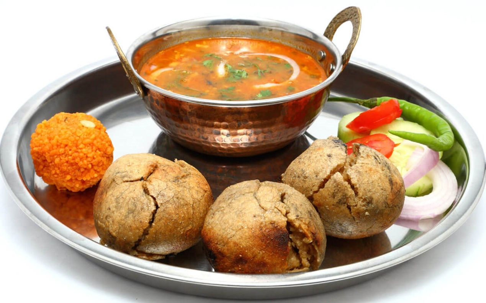

Food In Udaipur
What and Where to Eat in Udaipur
Udaipur is a part of a large state, Rajasthan that managed to keep its royal heritage as a culture of the lifestyle. When it comes to Udaipur cuisine, you can taste the heritage of the land in their food. If you are looking for a simple yet, romantic evening, the best option is to dine in a decent hotel in Udaipur. The unique spices available in the place make the dishes more aromatic and interesting.
Interesting Cuisine of Udaipur
Thali
Thali is a style of Indian dish in which numerous delicacies will be served in a large plate, unlimited in quantity. This is the best way to enjoy many dishes of the city. Udaipur Thali’s interesting and unique dishes are ghee chapatti, chaas, different chutneys and others.
Aloo Paratha
This is a style of chapatti or paratha which is stuffed with potato, radish and other vegetables. It is served with raita or other side-dish and usually butter milk is chosen as a beverage for this dish.
Chaat Items
This is a style of chapatti or paratha which is stuffed with potato, radish and other vegetables. It is served with raita or other side-dish and usually butter milk is chosen as a beverage for this dish.
Mewari Styled Curries
Mewari styled cuisines are much flavored. It uses fresh spices and ingredients to bring the strong taste. Mewari egg and non-veg curries are very famous among tourists. Request for a mild spicy version if you are not comfortable handling spicy and hot foods.
Street Food or Snacks
- Samosa of Varying Taste, Stuffing and Style
- Poha
- Kachori
- Pakoda
- Vadapav
- Jelabi
- Local Styled Scrambled Eggs
- Local Masala Coffee or Normal Coffee
Top Restaurants to Dine in Udaipur
Chandni
It is a classy and mid-budget restaurant. It is usually filled with couples as it has a romantic view overlooking the lake. It is located inside UdaiVilas hotel and is a star-rated hotel. Reservations are essential during tourism season and weekends.
Ambrai
This restaurant is a budget one and is famous for barbeque, continental and Chinese cuisine along with local cuisine. The hotel is located at lakeshore giving an aesthetical pleasure while dining.
Jagat Niwas Palace Hotel
This is a classy rooftop mid-budget restaurant, which is famous for tandoori dishes and cocktails. You can find many tourists here as you can dine and drink in this restaurant. The cocktail menu makes this place more famous.
Lotus Cafe
This is a small restaurant and the cost is within budget. Those who want to enjoy some free time and hangout with closed ones choose this café. Chicken dishes of this café are famous among people. It is not common to find foreign tourists here.
Udai Kothi
This is a roof terrace restaurant with romantic environment. There is a pool side restaurant too. You can find a lot of romantic couples here. If you are looking for a romantic dinner, this is the right one. Moreover, the restaurant is open until 1 AM and this brings many night-owls to this spot. It is a luxury hotel.
Mayur Rooftop Cafe
It is true that this place is famous for its authentic style of dishes. However, it is more famous for its clear view of Jagdish temple from the tables. If you want to enjoy Udaipur through tongue and eyes, this is the best place.
Natraj Hotel
This is not a fancy restaurant but it is very famous among tourists and locals for its thali. Natraj Thali is a unique styled thali that you cannot enjoy elsewhere. Apart from authentic Rajasthani styled dishes, this hotel also serves Gujarati styled delicacies. You ought to taste rice and dal of this place.
Unique Restaurants in Udaipur
- 1559 AD – As the name indicates, this place gives a medieval styled ambience. The waiters also match to the decor
- Oberoi Udaivilas –This is famous for a luxurious style. It is one of the most luxurious hotels in Udaipur
- Upre –Do you want to dine in the middle of water? This hotel is located on the terrace of the hotel in the lake Pichola. It is famous for authentic Mewari dishes.
- Palki Khanna –Very luxurious hotel located inside City Palace. It is unique for its royal ambience and lake view.
- Millet of Mewar –This health food restaurant provides vegan, gluten free and healthy food. The ingredients used in this restaurant are raw, gluten free and organic. It is located outside Chand Pol.
- Neel Kamal restaurant –This restaurant has an authentic theme and classic music played in the background. This hotel is famous for its theme and decor.
- Zucchini – This Italian Indian cuisine restaurant is famous for its Zen theme and décor. The hotel has used its uttermost creativity in seating arrangement and food.